에너지관리기사 (2014-03-02 기출문제)
1과목: 연소공학
1. 연료 사용설비의 배기가스에 의한 대기오염을 방지 하는 방법으로 가장 거리가 먼 것은?
- 집진장치를 설치한다.
- 공기비를 높인다.
- 연료유의 불순물을 제거한다.
- 연소장치를 정기적으로 청소한다.
(정답률: 85%)

2. 저질탄 또는 조분탄의 연소방식이 아닌 것은?
- 분무식
- 산포식
- 쇄상식
- 계단식
(정답률: 64%)
3. 9.8N의 물체가 100m의 높이에서 지상으로 떨어졌을 때 발생하는 열량은 약 몇 J인가?
- 834
- 980
- 1034
- 1234
(정답률: 83%)
4. 과잉공기량이 연소에 미치는 영향으로 가장 거리가 먼 것은?
- 열효율
- CO 배출량
- 노내 온도
- 연소시 와류 형성
(정답률: 74%)
5. 경유에 포함된 탄화수소 중 세탄가가 높은 순서대로 나타낸 것은?
- 노말 파라핀 ＞ 나프텐 ＞ 올레핀
- 노말 파라핀 ＞ 올레핀 ＞ 나프텐
- 올레핀 ＞ 노말 파라핀 ＞ 나프텐
- 올레핀 ＞ 나프텐 ＞ 노말 파라핀
(정답률: 72%)
6. 액체의 인화점에 영향을 미치는 요인으로 가장 거리가 먼 것은?
- 온도
- 압력
- 발화지연시간
- 용액의 농도
(정답률: 76%)
7. 기체연료가 다른 연료에 비하여 연소용 공기가 적게 소요되는 가장 큰 이유는?
- 인화가 용이하므로
- 착화온도가 낮으므로
- 열전도도가 크므로
- 확산연소가 되므로
(정답률: 86%)
8. 액체 연료의 발열량 산출식으로 옳은 것은? (단, HL : 저위 발열량, Hh : 고위발열량, 연료 1kg 중의 C, H, O, S 이다.)
- Hh = 33.9C + 144(H- 0/8) + 10.5S [MJ/kg]
- Hh = 33.9C + 119.6(H- 0/8) + 9.3S [MJ/kg]
- HL = 33.9C + 119.6(H+ 0/8) + 9.3S [MJ/kg]
- HL = 33.9C + 142.C(H+ 0/8) + 9.3S [MJ/kg]
(정답률: 64%)
9. 전압은 분압의 합과 같다는 법칙은?
- 아마겟의 법칙
- 뤼삭의 법칙
- 달톤의 법칙
- 헨리의 법칙
(정답률: 83%)
10. 석탄에 함유되어 있는 성분 중 ㉮수분, ㉯휘발분, ㉰황분이 연소에 미치는 영향으로 가장 적합하게 각각 나열한 것은?
- ㉮매연발생 ㉯대기오염 ㉰착화 및 연소방해
- ㉮발열량 감소 ㉯매연발생 ㉰연소기관의 부식
- ㉮연소방해 ㉯발열량 감소 ㉰매연발생
- ㉮매연발생 ㉯발열량 감소 ㉰점화방해
(정답률: 80%)
11. 저탄장 바닥의 구배와 실외에서 탄층높이로 가장 적절한 것은?
- 구배 1/50 ~ 1/100, 높이 2m 이하
- 구배 1/100 ~ 1/150, 높이 4m 이하
- 구배 1/150 ~ 1/200, 높이 2m 이하
- 구배 1/200 ~ 1/250, 높이 4m 이하
(정답률: 81%)
12. 95% 효율을 가진 집진장치계통을 요구하는 어느 공장에서 35% 효율을 가진 전처리 장치를 이미 설치하였다. 주처리 장치는 몇 % 효율을 가진 것이어야 하는가?
- 60.00
- 85.76
- 92.31
- 95.45
(정답률: 56%)
13. 온도가 높고 압력이 커질수록 연소속도는 어떻게 변하는가?
- 빨라진다.
- 느려진다.
- 불변이다.
- 상관없다.
(정답률: 84%)
14. 연소속도는 다음 중 어느 것의 영향을 가장 많이 받는가?
- 1차 공기와 2차 공기의 비율
- 공기비
- 공급되는 연료의 현열
- 연료의 조성
(정답률: 84%)
15. 연도가스를 분석한 결과 값이 각각 CO2 12.6%, O2 6.4% 일 때 (CO2)max 값은?
- 15.1%
- 18.1%
- 21.1%
- 24.1%
(정답률: 70%)
16. 액체연료를 연소시키는데 필요한 이론공기량을 옳게 표시한 것은?
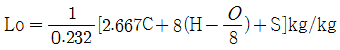
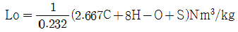
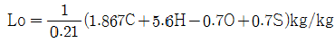
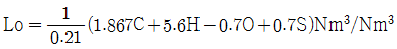
(정답률: 63%)
17. 출력 20000kW의 활력발전소에 사용되는 중유의 발열량이 9900kcal/kg일 때 중유 1kg의 출력(kWh)은? (단, 열효율은 34%이다.)
- 3.91
- 39.1
- 5.2
- 52
(정답률: 39%)
18. 연료 중에 회분이 많을 경우 연소에 미치는 영향으로 옳은 것은?
- 발열량이 증가한다.
- 연소상태가 고르게 된다.
- 클링커의 발생으로 통풍을 방해한다.
- 완전연소되어 잔류물을 남기지 않는다.
(정답률: 88%)
19. 다음 중 석유제품에 포함된 황분에 대한 시험방법이 아닌 것은?
- 램프식
- 봄브식
- 연소관식
- 타그식
(정답률: 58%)
20. 수소 1Nm3를 이론공기량으로 완전연소시켰을 때 생성되는 이론 습윤 연소가스량(Nm3)은?
- 1.88
- 2.88
- 3.88
- 4.88
(정답률: 58%)
2과목: 열역학
21. 오토사이클에서 동작 가스의 가열전, 후 온도가 600K, 1200K 이고 방열 전, 후의 온도가 800K, 400K일 경우의 이론 열효율은 몇 % 인가?
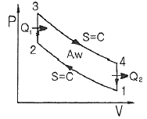
- 28.6
- 33.3
- 39.4
- 42.6
(정답률: 61%)
22. 압력 200kPa, 체적 1.66m3의 상태에 있는 기체를 정압하에서 열을 제거하였다. 최종 체적이 처음 체적의 반이라면 이 기체에 의하여 행하여진 일은 몇 kJ인가?
- -256
- -188.5
- -166
- -125.5
(정답률: 59%)
23. 어떤 열기관이 열펌프와 냉동기로 작동될 수 있다. 동일한 고온열원과 저온열원에서 작동될 때, 열펌프(heat pump)와 냉동기의 성능계수 COP는 다음과 같은 관계식으로 표시될 수 있다. ( ) 안에 알맞은 값은?
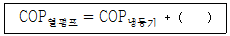
- 0.0
- 1.0
- 1.5
- 2.0
(정답률: 77%)
24. 동일한 압축비 및 연료 단절비에서 열효율이 큰 순서는?
- Otto cycle ＞ Sabathe cycle ＞ Diesel cycle
- Sabathe cycle ＞ Diesel cycle ＞ Otto cycle
- Diesel cycle ＞ Sabathe cycle ＞ Otto cycle
- Sabathe cycle ＞ Otto cycle ＞ Diesel cycle
(정답률: 78%)
25. 96.9℃로 유지되고 있는 항온탱크가 온도 26.9℃의 방 안에 놓여있다. 어떤 시간 동안에 1000J의 열이 항온탱크로부터 방 안 공기로 방출됐다. 항온탱크 물질의 엔트로피의 변화는 몇 J/K인가?
- -0.27
- -2.70
- 270
- 2700
(정답률: 56%)
26. 이상기체의 정압비열(Cp)과 정적비열(Cv)의 관계로 옳은 것은? (단, R은 기체상수이다.)
- Cp + Cv = R
- Cp - Cv = R
- Cp/Cv = R
- CpㆍCv = R
(정답률: 69%)
27. 다음의 공정도를 갖는 사이클의 명칭은?
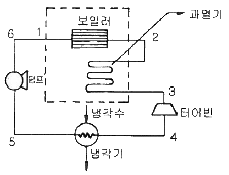
- Diesel cycel
- Carnot cycle
- Otto cycle
- Rankine cycle
(정답률: 73%)
28. 성능계수가 4.3 인 냉동기가 시간당 30MJ의 열을 흡수한다. 이 냉동기를 작동하기 위한 동력은 약 몇 kW인가?
- 0.25
- 1.94
- 6.24
- 10.4
(정답률: 53%)
29. 압력이 200kPa로 일정한 상태로 유지되는 실린더 내의 이상기체가 체적 0.3m3에서 0.4m3로 팽창될 때 이상기체가 한 일의 양은 몇 kJ인가?
- 20
- 40
- 60
- 80
(정답률: 57%)
30. 밀폐계에서 비가역 단열과정에 대한 엔트로피 변화를 옳게 나타내는 식은?
- dS = 0
- dS ＞ 0
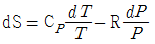
- dS = δQ / T
(정답률: 67%)
31. 어느 밀폐계와 주위 사이에 열의 출입이 있다. 이것으로 인한 계와 주위의 엔트로피의 변화량을 각각 △S1, △S2로 하면 엔트로피 증가의 원리를 나타내는 식은?
- △S1 ＞ 0
- △S2 ＞ 0
- △S1 + △S2 ＞ 0
- △S1 - △S2 ＞ 0
(정답률: 73%)
32. 기체상수가 0.287kJ/kg·K인 이상기체의 정압비열이 1.0kJ/kg·K이다. 온도가 10℃ 만큼 상승하면 내부 에너지는 얼마나 증가하는가?
- 0.287kJ/kg
- 1.0kJ/kg
- 2.87kJ/kg
- 7.13kJ/kg
(정답률: 36%)
33. 폴리트로픽 지수가 n ＞ k(비열비)인 경우에 팽창에 의한 열량은 어떠한가?
- 0 이 된다.
- 일량이 된다.
- 가열량이 된다.
- 방열량이 된다.
(정답률: 49%)
34. 체적 0.4m3인 단단한 용기 안에 100℃의 물 2kg이 들어있다. 이 물의 건도는 얼마인가? (단, 100℃의 물에 대해 vf=0.00104m3/kg, vg=1.672m3/kg 이다.)
- 11.9%
- 10.4%
- 9.9%
- 8.4%
(정답률: 31%)
35. 직경이 일정한 수평관에 교축밸브가 장치되어 있으며 공기가 흐른다. 밸브 상류의 공기는 800kPa, 30℃이고 밸브 하류의 압력은 600kPa이다. 밸브가 잘 단열되어 있을 때 밸브 하류에서의 공기온도는 얼마인가? (단, 공기를 이상기체로 가정한다.)
- 70℃
- 30℃
- 20℃
- 0℃
(정답률: 51%)
36. 물의 경우 고온, 고압에서 포화액과 포화증기의 구분이 없어지는 상태가 나타난다. 이 상태를 무엇이라 하는가?
- 상중점
- 포화점
- 임계점
- 비등점
(정답률: 74%)
37. 냉장고가 저온체에서 30kW의 열을 흡수하여 고온체로 40kW의 열을 방출한다. 이 냉장고의 성능계수는?
- 2
- 3
- 4
- 5
(정답률: 69%)
38. 압력 300kPa인 이상기체 150kg이 있다. 온도를 일정하게 유지하면서 압력을 100kPa로 변화시킬 때 엔트로피(kJ/K)변화는? (단, 기체의 정적비열은 1.735kJ/kg·K, 비열비는 1.299이다.)
- 62.7
- 73.1
- 85.5
- 97.2
(정답률: 35%)
39. 이상기체 1kg이 A상태(TA, PA )에서 B상태(TB, PB )로 변화하였다. 정압비열 CP가 일정할 경우 엔트로피의 변화 △S를 옳게 나타낸 것은?
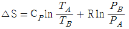
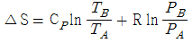
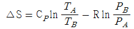
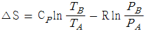
(정답률: 45%)
40. 그림 중 A 점에서는 어떠한 상태가 공존하는가?
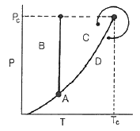
- 기상, 액상
- 고성, 액상
- 기상, 고성
- 기상, 액상, 고성
(정답률: 72%)
3과목: 계측방법
41. 열전대 온도계의 열기전력은 무엇으로 측정하는가?
- 전위차계
- 파고계
- 전력계
- 저항계
(정답률: 74%)
42. 다음 중 피토관의 유속 V(m/s)를 구하는 식은? (단, g : 중력가속도 [9.8m/s2], Pt : 전압 [kg/m2], Ps : 정압[kg/m2], r : 유체의 비중량 [kg/m3])
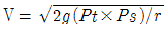
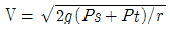
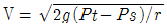
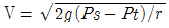
(정답률: 70%)
43. 비례동작 제어장치에서 비례대(帶)가 40% 일 경우 비례강도는 얼마인가?
- 0.5
- 1
- 2.5
- 4
(정답률: 61%)
44. 다음 중 실제 값이 나머지 3개와 다른 값을 갖는 것은?
- 273.15k
- 0℃
- 460˚R
- 32℉
(정답률: 80%)
45. 방사온도계의 특징에 대한 설명으로 옳은 것은?
- 측정대상의 온도에 영향이 크다.
- 이동물체에 대한 온도측정이 가능하다.
- 저온도에 대한 측정에 적합하다.
- 응답속도가 느리다.
(정답률: 69%)
46. 다음 중 자동제어계와 직접 관련이 없는 장치는?
- 기록부
- 검출부
- 조절부
- 조작부
(정답률: 75%)
47. 다음 보기에서 설명하는 온도계는?
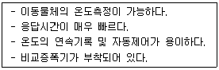
- 광전관식 온도계
- 광 고온계
- 색 온도계
- 게겔콘 온도계
(정답률: 57%)
48. 열전대온도계의 기전력은 온도에 따라 변한다. 다음 중 일정온도에서 열기전력의 값이 가장 큰 것은?
- 크로멜-알루멜
- 크로멜-콘스탄탄
- 철-콘스탄탄
- 백금-백금·로듐
(정답률: 38%)
49. 오리피스(orifice)는 어떤 형식의 유량계인가?
- 터빈식
- 면적식
- 용적식
- 차압식
(정답률: 75%)
50. 다음 중 화학적 가스 분석계에 해당하는 것은?
- 고체 흡수제를 이용하는 것
- 가스의 밀도와 점도를 이용하는 것
- 흡수용액의 전기전도도를 이용하는 것
- 가스의 자기적 성질을 이용하는 것
(정답률: 67%)
51. 다음 중 하겐-포아젤의 법칙을 이용한 점도계는?
- 낙구식 점도계
- 스토머 점도계
- 맥미첼 점도계
- 세이볼트 점도계
(정답률: 71%)
52. 다음 각 가스별 시험방법 등의 연결이 잘못된 것은?
- 암모니아 - 리트머스시험지 - 청색
- 시안화수소 - 질산구리벤젠지 - 청색
- 염소 - 염화파라듐지 - 적색
- 황화수소 - 연당지 - 흑갈색
(정답률: 64%)
53. 다음 중 방전을 이용하는 진공계는?
- 피라니
- 가이슬러관
- 휘스톤브리지
- 서미스터
(정답률: 55%)
54. 조리개부가 유선형에 가까운 형상으로 설계되어 축류의 영향을 비교적 적게 받게 하고 조리개에 의한 압력손실을 최대한으로 줄인 조리개의 형식의 유량계는?
- 원판(dosc)
- 벤투리(venturi)
- 노즐(nozzle)
- 오리피스(orifice)
(정답률: 70%)
55. 불꽃이온화식 검출기에 대한 설명으로 옳은 것은?
- 시료를 파괴한다.
- 감도가 낮다.
- 선형감응범위가 좁다.
- 잡음이 많다.
(정답률: 69%)
56. 전자 유량계의 특징에 대한 설명으로 가장 거리가 먼 것은?
- 응답이 매우 빠르다.
- 압력손실이 거의 없다.
- 도전성 유체에 한하여 사용한다.
- 점도가 높은 유체는 사용하기 곤란하다.
(정답률: 76%)
57. 제어량에 편차가 생겼을 경우 편차의 적분차를 가감해서 조작량의 이동속도가 비례하는 동작으로서 잔류편차가 제어되나 제어 안정성은 떨어지는 특징을 가진 동작은?
- 비례동작
- 적분동작
- 미분동작
- 뱅뱅동작
(정답률: 72%)
58. 열전대에 사용하는 보상도선은 다음 중 어느 원리에 해당하는가?
- 제벡(Seebeck)효과
- 톰슨(Thomson)효과
- 중간금속의 법칙
- 중간온도의 법칙
(정답률: 56%)
59. 막식가스미터의 고장 현상인 부동의 원인과 거리가 먼 것은?
- 계량막의 파손, 밸브의 탈락
- 밸브와 밸브 시트 틈새 불량
- 지시기어장치의 물림 불량
- 계량실의 체적변화
(정답률: 67%)
60. 보일러의 통풍계 등에도 사용되며 미세압을 측정하는데 가장 적당한 압력계는?
- 경사관식 액주형 압력계
- 분동식 액주형 압력계
- 부르동관식 압력계
- 단관식 압력계
(정답률: 75%)
4과목: 열설비재료 및 관계법규
61. 다음은 요로의 정의에 대한 설명이다. ( )안 ㉮~㉱에 들어갈 용어로서 틀린 것은?
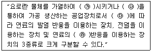
- ㉮ - 용융
- ㉯ - 소성
- ㉰ - 열원
- ㉱ - 산화
(정답률: 76%)
62. 열처리로 경화된 재료를 변태점 이상의 적당한 온도로 가열한 다음 서서히 냉각하여 강의 압도를 미세화하여 조직을 연화, 내부응력을 제거하는 로는?
- 머플로
- 소성로
- 풀림로
- 소결로
(정답률: 73%)
63. 다음 중 캐스터불내화물의 특성이 아닌 것은?
- 현장에서 필요한 형상으로 성형이 가능하다.
- 내스폴링성이 우수하고 열전도율이 작다.
- 열팽창이 크나 잔존수축이 작다.
- 소성할 필요가 없고 가마의 열손실이 적다.
(정답률: 59%)
64. 다음 내화물의 특성 중 비중과 관계없는 것은?
- 슬레이킹
- 압축강도
- 기공율
- 내화도
(정답률: 56%)
65. 태양전지에서 가장 널리 쓰이는 재료는?
- 유황
- 탄소
- 규소
- 인
(정답률: 69%)
66. 검사대상기기 조종자에 대한 교육기관으로서 맞는 것은?
- 에너지관리공단
- 한국산업인력공단
- 전국보일러설비협회
- 한국보일러공업협동조합
(정답률: 78%)
67. 단열재를 사용하지 않는 경우의 방출열량이 300kcal/h이고, 단열재를 사용할 경우의 방출열량이 0.1kW라 하면 이 때의 보온 효율은 약 몇 % 인가?
- 61
- 71
- 81
- 91
(정답률: 49%)
68. 산업통상자원부장관은 에너지 사정 등의 변동으로 에너지수급에 중대한 차질이 발생할 우려가 있다고 인정되면 필요한 범위에서 에너지 사용자, 공급자 등에게 조정·명령 그 밖에 필요한 조치를 할 수 있다. 이에 해당되지 않는 항목은?
- 에너지의 개발
- 지역별 주요수급자별 에너지 할당
- 에너지의 비축
- 에너지의 배급
(정답률: 71%)
69. 고압 배관용 탄소강관에 대한 설명 중 틀린 것은?
- 관의 제조는 킬드강을 사용하여 이음매 없이 제조한다.
- KS 규격 기호로 SPPS 라고 표기한다.
- 350℃이하, 100kg/cm2이상의 압력범위에서 사용이 가능하다.
- NH3 합성용 배관, 화학공업의 고압유체 수송용에 사용한다.
(정답률: 72%)
70. 벽돌, 기와, 보도타일 등 건축재료를 소성하는데 주로 사용되는 가마는?
- 고리가마
- 회전가마
- 선가마
- 탱크가마
(정답률: 74%)
71. 에너지이용합리화법에서의 양벌규정 사항에 해당되지 않는 것은?
- 에너지저장시설의 보유 또는 저장의무의 부과 시 정당한 이유 없이 이를 거부하거나 이행하지 아니한 자
- 검사대상기기의 검사를 받지 아니한 자
- 검사대상기기 조종자를 선임하지 아니한 자
- 개선명령을 정당한 사유 없이 이행하지 아니한 자
(정답률: 59%)
72. 에너지이용합리화법에서 정한 검사대상기기에 대한 검사의 종류가 아닌 것은?
- 계속사용검사
- 개방검사
- 개조검사
- 설치장소 변경검사
(정답률: 59%)
73. 알루미늄박 보온재의 열전도율의 값으로 가장 옳은 것은?
- 0.014~0.024kcal/m·h·℃
- 0.028~0.048kcal/m·h·℃
- 0.14~0.24kcal/m·h·℃
- 0.28~0.48kcal/m·h·℃
(정답률: 65%)
74. 다음 중 내화단열벽돌의 안전사용온도는?
- 1,300~1,500℃
- 800~1,200℃
- 500~800℃
- 100~500℃
(정답률: 47%)
75. 검사대상기기조종자의 해임신고는 신고사유가 발생한 날로부터 며칠 이내에 하여야 하는가?
- 15일
- 20일
- 30일
- 60일
(정답률: 76%)
76. 에너지사용량신고에 대한 설명으로 옳은 것은?
- 에너지관리대상자는 매년 12월 31일까지 사무소가 소재하는 지역을 관할하는 시ㆍ도시지사에게 신고하여야 한다.
- 에너지사용량의 신고를 받은 시ㆍ도지사는 이를 매년 2월 말일까지 산업통상자원부장관에게 보고하여야 한다.
- 에너지사용량신고에는 에너지를 사용하여 만드는 제품·부가가치 등의 단위당 에너지이용효율 향상목표 또는 이산화탄소배출 감소목표 및 이행방법을 포함하여야 한다.
- 에너지관리대상자는 연료 및 열의 연간사용량이 2천 티·오·이 이상이고 전력의 연간사용량이 4백만킬로 와트시 이상인 자로 한다.
(정답률: 61%)
77. 에너지법에서 정한 에너지에 해당하지 않는 것은?
- 열
- 연료
- 전기
- 원자력
(정답률: 79%)
78. 용광로에 장입하는 코크스의 역할이 아닌 것은?
- 철광석 중의 황분을 제거
- 가스상태로 선철 중에 흡수
- 선철을 제조하는데 필요한 열원을 공급
- 연소시 환원성가스를 발생시켜 철의 환원을 도모
(정답률: 62%)
79. 다음 중 주물 용해로가 아닌 것은?
- 반사로
- 큐폴라
- 용광로
- 도가니로
(정답률: 60%)
80. 고효율에너지 인증대상기자재에 해당하지 않는 것은?
- 펌프
- 무정전 전원장치
- 가정용 가스보일러
- 발광다이오드 등 조명기기
(정답률: 63%)
5과목: 열설비설계
81. 다음 급수처리 방법 중 화학적 처리방법은?
- 이온교환법
- 가열연화법
- 증류법
- 여과법
(정답률: 74%)
82. 보일러경판의 강도가 큰 순서로 바르게 나열된 것은?
- 반구형경판 ＞ 반타원형경판 ＞ 접시형경판 ＞ 평경판
- 반구형경판 ＞ 접시형경판 ＞ 반타원형경판 ＞ 평경판
- 반타원형경판 ＞ 반구형경판 ＞ 접시형경판 ＞ 평경판
- 반타원형경판 ＞ 접시형경판 ＞ 반구형경판 ＞ 평경판
(정답률: 64%)
83. 압력 1MPa인 포화수가 압력 0.4MPa인 재증발기(Flash Vessel)에 들어올 때, 포화수 100kg당 약 몇 kg의 증기가 발생하는가? (단, 1MPa에서 포화수 엔탈피는 775.1kJ/kg, 0.4MPa에서 포화수 엔탈피는 636.8kJ/kg이고, 0.4MPa의 증기 엔탈피는 2748.4kJ/kg이다.)
- 5.0
- 6.5
- 28.2
- 36.7
(정답률: 28%)
84. 급수에서 ppm 단위를 사용할 때 이에 대하여 가장 잘 나타낸 것은?
- 물 1mL 중에 함유한 시료의 양을 g 으로 표시한 것
- 물 100mL 중에 함유한 시료의 양을 mg 으로 표시한 것
- 물 1000mL 중에 함유한 시료의 양을 g 으로 표시한 것
- 물 1000mL 중에 함유한 시료의 양을 mg 으로 표시한 것
(정답률: 75%)
85. 보일러의 용량을 산출하거나 표시하는 양으로서 적합하지 않은 것은?
- 상당증발량
- 증발율
- 연소율
- 재열계수
(정답률: 71%)
86. 다음 중 열관류율의 표시단위는?
- kJ/m·h·K
- kJ/m2·h·K
- kJ/m3·h·K
- kJ/m4·h·K
(정답률: 73%)
87. 연소실 연도의 단면적 크기를 정할 때 중요성이 가장 적게 강조되는 것은?
- 연도내부를 통과하는 연소가스량
- 연소가스의 통과속도
- 연돌의 통풍력
- 대기 온도
(정답률: 65%)
88. 노통연관식 보일러의 수면계 부착위치 기준에 대하여 가장 옳은 것은?
- 노통 최고부위 50mm
- 노통 최고부위 100mm
- 연관의 최고부위 10mm
- 화실 천정판 최고부위의 길이의 1/3
(정답률: 73%)
89. 내경이 150mm이고, 강판두께가 10mm인 파이프의 허용인장응력이 6kg/mm2일 때, 이 파이프의 유량이 40L/s 이다. 이 때 평균유속은 약 몇 m/s 인가? (단, 유량계수는 1 이다.)
- 0.92
- 1.⑤
- 1.78
- 2.26
(정답률: 24%)
90. 물의 탁도(濁度)에 대한 설명으로 옳은 것은?
- 카올린 1g이 증류수 1L속에 들어 있을 때의 색과 같은 색을 가지는 물을 탁도 1도의 물이라 한다.
- 카올린 1mg이 증류수 1L속에 들어 있을 때의 색과 같은 색을 가지는 물을 탁도 1도의 물이라 한다.
- 탄산칼륨 1g이 증류수 1L속에 들어 있을 때의 색과 같은 색을 가지는 물을 탁도 1도의 물이라 한다.
- 탄산칼륨 1mg이 증류수 1L속에 들어 있을 때의 색과 같은 색을 가지는 물을 탁도 1도의 물이라 한다.
(정답률: 73%)
91. 보일러에 설치된 기수분리기에 대한 설명으로 틀린 것은?
- 발생된 증기 중에서 수분을 제거하고 건포화증기에 가까운 증기를 사용하기 위한 장치이다.
- 증기부의 체적이나 높이가 작고 수면의 면적이 증발량에 비해 작은 때는 기수공발이 일어날 수 있다.
- 압력이 비교적 낮은 보일러의 경우는 압력이 높은 보일러 보다 증기와 물의 비중량 차이가 극히 작아 기수분리가 어렵다.
- 사용원리는 원심력을 이용한 것, 스크러버를 지나게 하는 것, 스크린을 사용하는 것 또는 이들의 조합을 이루는 것 등이 있다.
(정답률: 64%)
92. 완전 흑체의 복사열량(Eb)이 절대온도(T)와의 관계식으로 옳은 것은?
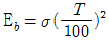
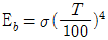
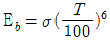
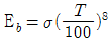
(정답률: 78%)
93. 보일러 부하의 급변으로 인하여 동 수면에서 작은 입자의 물방울이 증기와 혼입하여 튀어 오르는 현상을 무엇이라고 하는가?
- 캐리오버
- 포밍
- 프라이밍
- 피팅
(정답률: 68%)
94. 인젝터의 작동순서로서 가장 적정한 것은?
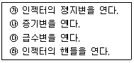
- ㉮ → ㉯ → ㉰ → ㉱
- ㉮ → ㉰ → ㉯ → ㉱
- ㉱ → ㉯ → ㉰ → ㉮
- ㉱ → ㉰ → ㉯ → ㉮
(정답률: 64%)
95. 20℃ 상온에서 재료의 열전도율(kJ/m·h·K)이 큰 순서가 바르게 나열된 것은?
- 알루미늄 ＞ 철 ＞ 구리 ＞ 고무 ＞ 물
- 알루미늄 ＞ 구리 ＞ 철 ＞ 물 ＞ 고무
- 구리 ＞ 알루미늄 ＞ 철 ＞ 고무 ＞ 물
- 구리 ＞ 알루미늄 ＞ 철 ＞ 물 ＞ 고무
(정답률: 51%)
96. 줄-톰슨계수(Joule-Thomson coefficient, μ)에 대한 설명으로 옳은 것은?
- μ 가 (-)일 때 기체가 팽창에 따라 온도는 내려간다.
- μ 가 (+)일 때 기체가 팽창에 따라 온도는 일정하다.
- μ 의 부호는 온도의 함수이다.
- μ 의 부호는 열량의 함수이다.
(정답률: 76%)
97. 화격자 크기가 1.5m×2m인 보일러에서 5시간 동안 3ton의 석탄을 사용하였다면 이 보일러의 화격자 연소율은 약 몇 kg/m2·h 인가?
- 100
- 200
- 300
- 1000
(정답률: 53%)
98. 보일러 효율을 나타낸 식 중 틀린 것은? (단, Ge : 상당 증발량, Gf : 연료 소비량[kg/h], Ga : 실제 증발량[kg/h], h2, h1 : 각각 발생증기 및 급수의 엔탈피[kcal/kg], Hℓ : 연료의 저발열량, ηc : 연소율, ζh 은 전열효율이다.)
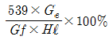
- ηc × ζh
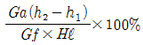
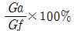
(정답률: 49%)
99. 다음 중 경판의 탄성(강도)을 높이기 위한 것은?
- 아담슨 조인트
- 브리징스페이스
- 용접조인트
- 그루빙
(정답률: 55%)
100. 보일러의 노통이나 화실과 같은 원통 부분이 외측으로부터의 압력에 견딜 수 없게 되어 눌려 찌그러져 찢어지는 현상을 무엇이라 하는가?
- 블리스터
- 압궤
- 응력부식균열
- 라미네이션
(정답률: 80%)